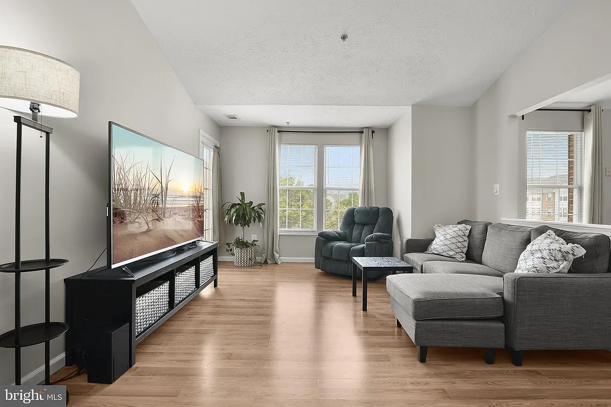
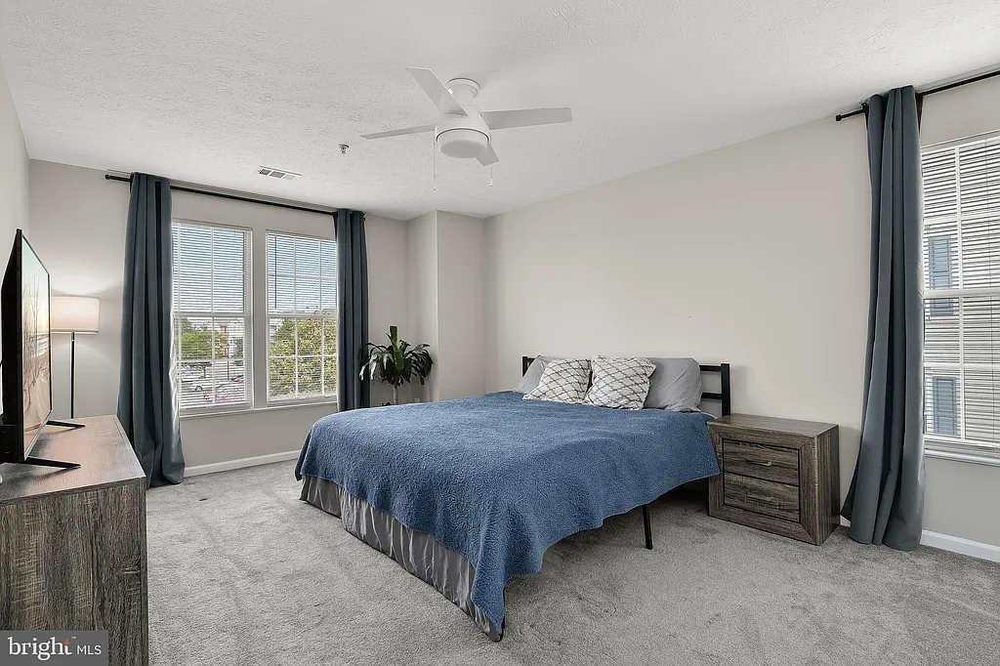

Date Me
Hello! I'm Chase, you can find out more about me below, or much more starting at the home page.
If you think we'd be good friends, partners, colleagues, etc. Link to form. 😊
The Basics
- Age: 24 (born 1998), seeking someone 20-28
- Location: Currently live in Odenton, Maryland. 🇺🇸
- Work: Computer security research, DOD
- Marital Status: Never been married
- Type: Monogamous
- Kids: Don't have kids, want 1-2
What I look like


My Life
I live in a condo in Odenton, Maryland.
 Personality
I'm definetely an introvert but I like interacting with people, especially in the context of activities I'm interested in.
INTP (some relevant graphic)
Big 5 results (some relevant graphic)
Politics: I'm a heterodox classical liberal: I value individual autonomy, economic freedom, and meritocracy, but I also think we should redistirbute resources in the interest of social welfare. I think free markets are important because they're the most efficent way we know of to allocate resources, but that we need a welfare state because markets don't usually allocate resources fairly. I'm fairly a-partisan, meaning that I don't always identify strongly with either political party, but I'm also not against to taking a side when it comes to objective facts. I'm strongly in favor of democracy and meritocracy in government.
Interests
Understanding things in terms of first principles, talking about ideas, introspection
I'm very curious about how the world works and so I have a wide variety of intellectual and creative interests.
- Cybersecurity: Vulnerability research, reverse engineering, cryptography, symbolic execution
- Computer Science: Rust, deep learning and AI, digital signal processing, formal methods
- Physics: Foundations of physics, quantum computing, statistical mechanics
- Philosophy: Epistemology, mind, causation, laws of nature, modality, religion, language
- Music: Piano, acoustic guitar, electric guitar, modular and desktop synthesizers, pedalboards
- VFX: Unreal Engine 5, Blender 3D, Houdini (a little bit)
- Other: Economics, finance, and law podcasts. Cognitive science and neuroscience.
Hobbies
I basically live for my hobbies. I consider my job a hobby.
Music Production
Explain my history with music production.
Interested mostly in sound design
Play the piano, guitar, etc.
Started learning modular synthesizers in 2022. Can use them to create patches that automatically generate sounds.
Miscellaneous
I've been learning to cook properly.
I'm fairly adventurous and like outdoors things like hiking, climbing, etc.
Activities
I like anything outdoorsy: hiking, climbing, walking. Or something more adventureous.
Worldview
I grew up in a Christian household but became an agnostic/atheist in college. The subsequent existentil crisis is the progenitor of my interest in philosophy!
Politically I'm an independant.